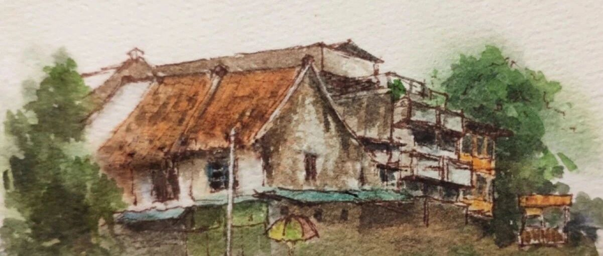

沿着季风的方向。
 雅加达
雅加达
对旅行者来说，如果纽约是“大苹果”，那么雅加达就是“大榴莲”。它表皮坚硬、带刺，悠然散发出腥臭的甜香，让习惯者欲罢不能，却令初来者难以下咽。 这种不适感首先体现在“风”这一自然元素的匮乏上。因为地处赤道附近，风几乎很难造访此地。走在雅加达，你或许可以偶然观察到一股热气流从铁皮屋顶卷起，或在夜晚开窗时，感到一阵空气轻微抽搐——但仅此而已，那决然算不上风，也没有风理应带给人的舒爽。 “想想无关紧要的事吧，想想风。”作家杜鲁门·卡波特写到。在雅加达的最初几日，我的确为风的缺失愤愤不平，仿佛一项宝贵的天赋人权被无情剥夺了。